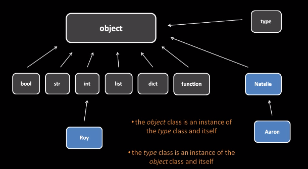
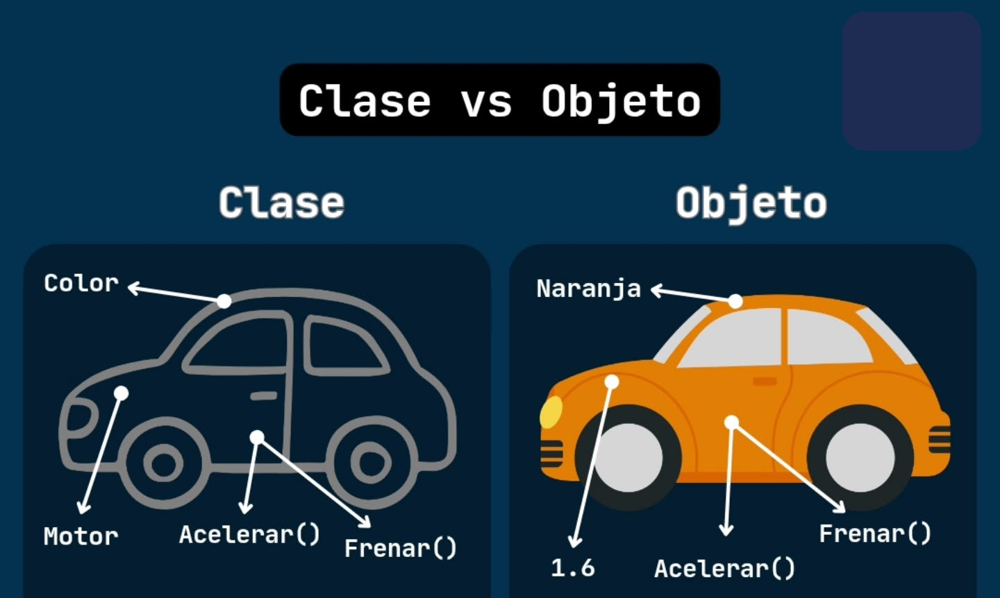
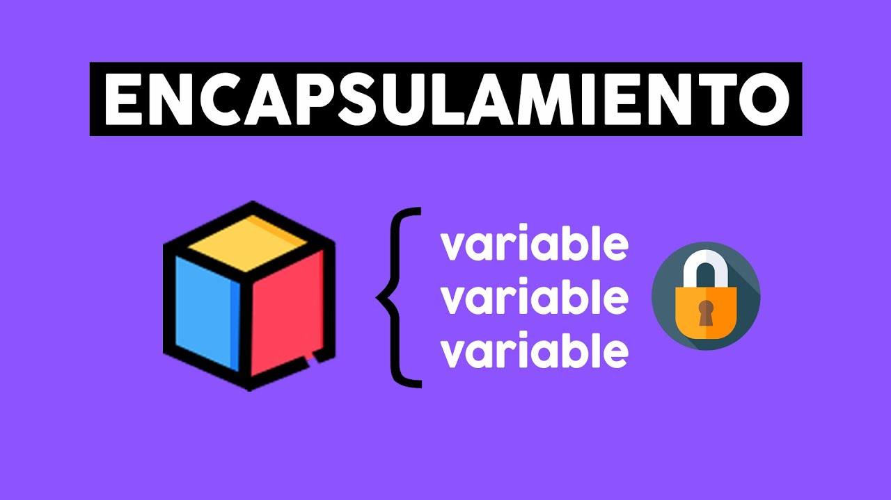
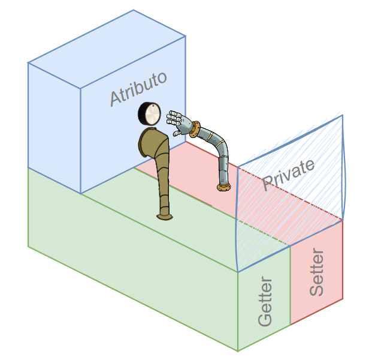
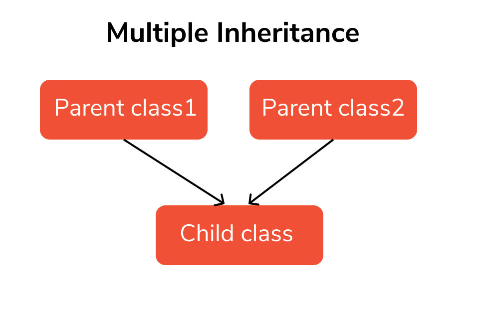

Programación orientada a objetos (POO)
La programación orientada a objetos es un paradigma que organiza el software en torno a objetos que combinan datos y comportamiento. En Python, la POO facilita la creación de aplicaciones más organizadas, reutilizables y fáciles de mantener.
- Modela entidades del mundo real mediante clases y objetos.
- Mejora la escalabilidad y el mantenimiento del código.
- Favorece la reutilización y el trabajo colaborativo.

Conceptos básicos de la POO
La POO se basa en varios conceptos fundamentales que permiten estructurar correctamente los programas en Python.
- Clase: plantilla que define atributos y métodos comunes.
- Objeto: instancia concreta de una clase.
- Atributo: variable que representa el estado del objeto.
- Método: función que define el comportamiento del objeto.

Definición de clases en Python
Una clase actúa como un molde a partir del cual se crean objetos. En Python,
se define utilizando la palabra clave class y una indentación adecuada.
"""Clase que representa a un animal"""
class Animal:
nombre = "Desconocido" """Atributo de clase"""
edad = 0 """Atributo de clase"""
def sonido(self): """Método que simula el sonido del animal"""
print("El animal hace un sonido")Constructor __init__
El constructor es un método especial que se ejecuta automáticamente al crear una instancia de la clase y se utiliza para inicializar sus atributos.
Al defninir el constructor ya no hace falta inicializar los atributos de clase.
class Animal:
def __init__(self, nombre, edad):
self.nombre = nombre
self.edad = edadUso de objetos
Los objetos se crean a partir de una clase mediante un proceso llamado instanciación. Cada objeto tiene sus propios valores de atributos.
animal1 = Animal("León", 5)
print(animal1.nombre)
print(animal1.edad)
animal1.sonido()
Métodos especiales
Los métodos especiales permiten personalizar el comportamiento de los objetos en situaciones concretas, como su representación en pantalla.
- Ejemplos:
__str__: Define la representación en cadena de un objeto.__repr__: Define la representación oficial de un objeto.__eq__: Define la comparación de igualdad entre objetos.__len__: Define el comportamiento de la función len().__add__: Define el comportamiento de la suma entre objetos.__getitem__: Define el comportamiento de acceso a elementos con corchetes.__call__: Permite que un objeto sea llamado como una función.__enter__ y __exit__: Permiten usar objetos en contextos de gestión de recursos.class Animal:
def __init__(self, nombre, edad): # Constructor para inicializar los atributos
self.nombre = nombre
self.edad = edad
def __str__(self): # Representación en cadena para el usuario
return f"{self.nombre} tiene {self.edad} años"
def __eq__(self, other): # Comparación de igualdad entre objetos
return self.nombre == other.nombre and self.edad == other.edad
def __add__(self, other): # Suma de edades entre dos objetos
return self.edad + other.edad
def __getitem__(self, index): # Acceso a atributos con corchetes
return (self.nombre, self.edad)[index]
def __call__(self): # Permite que el objeto sea llamado como una función
print(f"{self.nombre} está siendo llamado como una función")
# Hay muchos más métodos especiales que permiten personalizar el comportamiento de los objetos en diferentes contextos. Revisad la documentación oficial de Python para más detalles.
Encapsulamiento y visibilidad
El encapsulamiento protege los datos internos de los objetos, limitando el acceso directo a sus atributos y controlando cómo se modifican.
- Atributos públicos: accesibles sin restricciones, definidos sin guion bajo.
especie - Atributos privados: definidos con doble guion bajo.
__nombre,__edad

class Animal:
def __init__(self, nombre, edad, especie):
self.__nombre = nombre # Atributo privado
self.__edad = edad # Atributo privado
self.especie = especie # Atributo público
def get_nombre(self): # Método getter para acceder al nombre
return self.__nombre
def set_nombre(self, nombre): # Método setter para modificar el nombre
self.__nombre = nombre
def get_edad(self): # Método getter para acceder a la edad
return self.__edad
def set_edad(self, edad): # Método setter para modificar la edad
if edad >= 0:
self.__edad = edad
def get_especie(self): # Método getter para acceder a la especie
return self.__especie
def set_especie(self, especie): # Método setter para modificar la especie
self.__especie = especieMétodos get y set
Los métodos get y set permiten acceder y modificar atributos privados de forma controlada, mejorando la seguridad y consistencia del código.

class Cuenta:
def __init__(self, saldo):
self.__saldo = saldo
def get_saldo(self):
return self.__saldo
def set_saldo(self, saldo):
if saldo >= 0:
self.__saldo = saldoDecoradores @property
Los decoradores permiten definir métodos de acceso con una sintaxis más clara, simulando el acceso directo a atributos.
class Producto:
def __init__(self, precio):
self.__precio = precio
@property
def precio(self):
return self.__precio
@precio.setter
def precio(self, valor):
if valor > 0:
self.__precio = valorHerencia y reutilización
La herencia permite crear nuevas clases a partir de otras existentes, reutilizando atributos y métodos sin duplicar código.

class Mamifero:
def sonido(self):
print("Sonido genérico")
class Perro(Mamifero):
def sonido(self):
print("Guau")Uso de super()
La función super() permite acceder a métodos de la clase base
desde una subclase, manteniendo el comportamiento original.
class Vehiculo:
def descripcion(self):
print("Vehículo genérico")
class Coche(Vehiculo):
def descripcion(self):
super().descripcion() # Llama al método de la clase base
print("Es un coche")Herencia múltiple
La herencia múltiple permite crear clases que heredan de varias clases base, combinando sus atributos y métodos.

# En este ejemplo, la clase Murcielago hereda de Mamifero y Volador, combinando sus comportamientos
# Mamifero define un método sonido.
class Mamifero:
def sonido(self):
print("Sonido genérico")
# Volador define un método volar
class Volador:
def volar(self):
print("Estoy volando")
# Murcielago puede usar ambos métodos y también personalizar el método sonido para su propio comportamiento.
# La clase Murcielago hereda de Mamifero y Volador, combinando sus comportamientos
class Murcielago(Mamifero, Volador):
def sonido(self):
print("Chillido de murciélago")